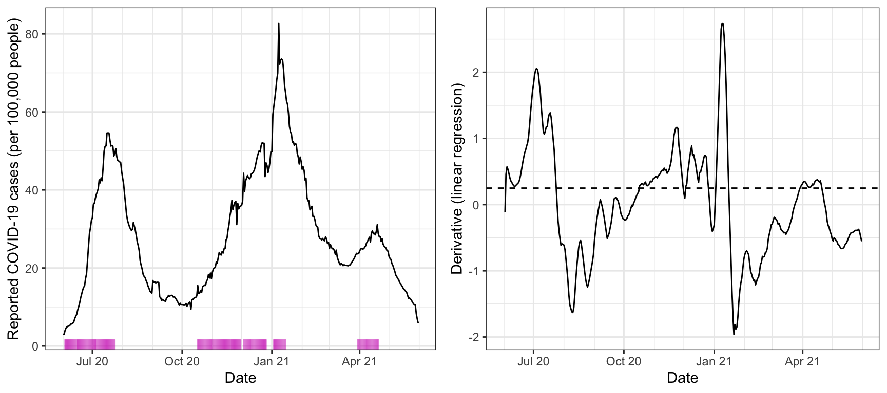
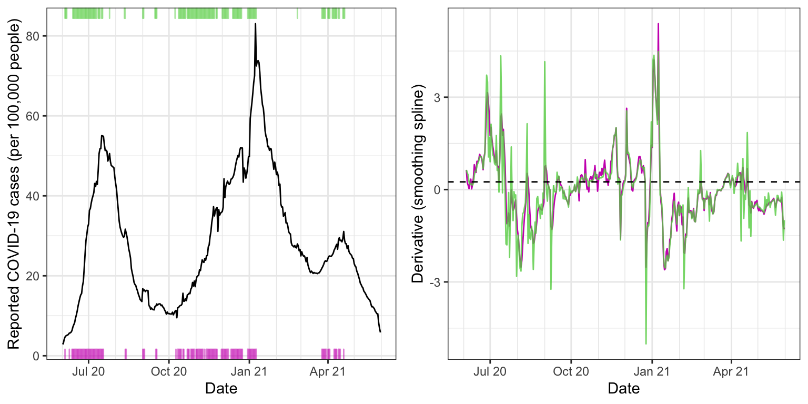
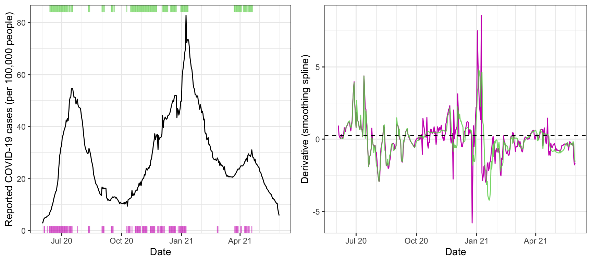

In this vignette, we’ll take a look at estimating derivatives of signals over time, using the estimate_deriv() function. We’ll examine this functionality on state-level daily reported COVID-19 case rates (where by rate we mean a count per 100,000 people), smoothed using a 7-day trailing average.
library(covidcast) library(epitools) library(dplyr) x <- covidcast_signal(data_source = "jhu-csse", signal = "confirmed_incidence_prop", start_day = "2020-06-01", end_day = "2021-05-31", geo_type = "state", geo_values = "fl") %>% as.epi_tibble() %>% rename(case_rates = value) %>% select(geo_value, time_value, case_rates) %>% epi_slide(slide_fun = ~ Mean(.x$case_rates), n = 7, new_col_name = "case_rates")
The estimate_deriv() function operates on a epi_tibble object, and aside from this, takes three main arguments: var, the variable whose derivatives are to be estimated; method, the name of the method to use for derivative estimation; and n, the length of the local window (here, in days) to use in training the given method. Here we use method = "lin", the default, which estimates the derivative using the slope from a simple linear regression, and n = 14, also the default.
x <- estimate_deriv(x, case_rates, method = "lin", n = 14) head(x, 10)
## # A tibble: 10 × 4
## geo_value time_value case_rates deriv
## <chr> <date> <dbl> <dbl>
## 1 fl 2020-06-01 3.11 NA
## 2 fl 2020-06-02 2.99 -0.116
## 3 fl 2020-06-03 4.04 0.466
## 4 fl 2020-06-04 4.68 0.577
## 5 fl 2020-06-05 4.96 0.540
## 6 fl 2020-06-06 5.12 0.475
## 7 fl 2020-06-07 5.17 0.406
## 8 fl 2020-06-08 5.37 0.361
## 9 fl 2020-06-09 5.69 0.336
## 10 fl 2020-06-10 5.72 0.308We can see that a column deriv has been added to the returned object, which contains the derivative estimates. Below we visualize these estimates in tandem with the signal itself. The purple ticks on the x-axis mark time points at which the derivative estimate exceeds a threshold (arbitrarily chosen) of 0.25. These seem to roughly but reasonably mark times of upswing in the underlying signal.
library(ggplot2) theme_set(theme_bw()) threshold = 0.25 p1 <- ggplot(x, aes(x = time_value, y = case_rates)) + geom_line() + geom_rug(data = x %>% filter(deriv >= threshold), aes(x = time_value), sides = "b", color = 6, alpha = 0.5) + scale_x_date(minor_breaks = "month", date_labels = "%b %y") + labs(x = "Date", y = "Reported COVID-19 cases (per 100,000 people)") p2 <- ggplot(x, aes(x = time_value, y = deriv)) + geom_line() + geom_hline(yintercept = threshold, linetype = 2) + scale_x_date(minor_breaks = "month", date_labels = "%b %y") + labs(x = "Date", y = "Derivative (linear regression)") gridExtra::grid.arrange(p1, p2, nrow = 1)

Now we consider method = "ss", which uses a smoothing spline for the estimate of the derivative. That is, at each time point, we fit a natural cubic spline to the data from the trailing n time points, and return the derivative of the fitted spline at the current time as the estimate. Here we set n = 28, a bit higher sample size, and fit the spline in two ways: first, using a fixed degrees of freedom of 8; and second, using cross-validation to choose the amount of regularization (tuning parameter). This is accomplished by passing additional arguments to estimate_deriv(), which are in turn passed on to the underlying function it uses to fit smoothing splines, stats::smooth.spline().
x <- estimate_deriv(x, case_rates, method = "ss", n = 28, new_col_name = "deriv_ss1", df = 8) x <- estimate_deriv(x, case_rates, method = "ss", n = 28, new_col_name = "deriv_ss2", cv = TRUE) p1 <- ggplot(x, aes(x = time_value, y = case_rates)) + geom_line() + geom_rug(data = x %>% filter(deriv_ss1 >= threshold), aes(x = time_value), sides = "b", color = 6, alpha = 0.5) + geom_rug(data = x %>% filter(deriv_ss2 >= threshold), aes(x = time_value), sides = "t", color = 3, alpha = 0.5) + scale_x_date(minor_breaks = "month", date_labels = "%b %y") + labs(x = "Date", y = "Reported COVID-19 cases (per 100,000 people)") p2 <- ggplot(x, aes(x = time_value)) + geom_line(aes(y = deriv_ss1), color = 6) + geom_line(aes(y = deriv_ss2), color = 3, alpha = 0.8) + geom_hline(yintercept = threshold, linetype = 2) + scale_x_date(minor_breaks = "month", date_labels = "%b %y") + labs(x = "Date", y = "Derivative (smoothing spline)") gridExtra::grid.arrange(p1, p2, nrow = 1)

The estimated derivates—in purple for the smoothing spline with 8 degrees of freedom of 8, and in green for the one tuned by cross-validation—appear less smooth than those above, from linear regression. Using cross-validation offers more adaptivity to the time-varying level of smoothness, but this can sometimes result in erratic derivative estimates (big green spikes in the right plot).
Lastly we consider method = tf", which uses trend filtering for estimating the derivative. That is, at each time point, we fit a discrete spline of quadratic order to the data from the trailing n time points, and return the discrete derivative of the fitted spline at the current time as the estimate. As before, we fit the spline in two ways: first, using a fixed degrees of freedom of 8; and second, using cross-validation to choose the amount of regularization. Caution: the computation here takes a while (it’s based on computing a full solution path for the trend filtering problem, via the genlasso::trendfilter() function), in the latter case.
x <- estimate_deriv(x, case_rates, method = "tf", n = 28, new_col_name = "deriv_tf1", df = 8) x <- estimate_deriv(x, case_rates, method = "tf", n = 28, new_col_name = "deriv_tf2", cv = TRUE) p1 <- ggplot(x, aes(x = time_value, y = case_rates)) + geom_line() + geom_rug(data = x %>% filter(deriv_tf1 >= threshold), aes(x = time_value), sides = "b", color = 6, alpha = 0.5) + geom_rug(data = x %>% filter(deriv_tf2 >= threshold), aes(x = time_value), sides = "t", color = 3, alpha = 0.5) + scale_x_date(minor_breaks = "month", date_labels = "%b %y") + labs(x = "Date", y = "Reported COVID-19 cases (per 100,000 people)") p2 <- ggplot(x, aes(x = time_value)) + geom_line(aes(y = deriv_tf1), color = 6) + geom_line(aes(y = deriv_tf2), color = 3, alpha = 0.8) + geom_hline(yintercept = threshold, linetype = 2) + scale_x_date(minor_breaks = "month", date_labels = "%b %y") + labs(x = "Date", y = "Derivative (smoothing spline)") gridExtra::grid.arrange(p1, p2, nrow = 1)

The estimated derivates now appear a bit smoother than the last ones, from the smoothing spline methods. Again, using cross-validation (in green) offers a noticeable improvement in adapting to to the time-varying level of smoothness, and also does not appear to be suffering from the same volatility we saw in the smoothing spline case.
In the call to estimate_deriv(), we can set keep_obj = TRUE to keep around a second column with the fitted model objects. For example, here, we can look at the p-values associated with the estimated slopes from lsfit().
x <- estimate_deriv(x, case_rates, method = "lin", n = 14, keep_obj = TRUE) class(x$deriv_obj)
## [1] "list"ls.print(x$deriv_obj[[7]])
## Residual Standard Error=0.3456
## R-Square=0.8856
## F-statistic (df=1, 5)=38.6943
## p-value=0.0016
##
## Estimate Std.Err t-value Pr(>|t|)
## Intercept -7478.7870 1202.9753 -6.2169 0.0016
## X 0.4063 0.0653 6.2205 0.0016x %>% rowwise() %>% mutate(p_value = quiet( tryCatch(ls.print(deriv_obj)$coef.table[[1]][2,"Pr(>|t|)"], error = function(e) NA))) %>% select(geo_value, time_value, case_rates, deriv, p_value) %>% head(10)
## # A tibble: 10 × 5
## # Rowwise:
## geo_value time_value case_rates deriv p_value
## <chr> <date> <dbl> <dbl> <dbl>
## 1 fl 2020-06-01 3.11 NA NA
## 2 fl 2020-06-02 2.99 -0.116 NaN
## 3 fl 2020-06-03 4.04 0.466 0.398
## 4 fl 2020-06-04 4.68 0.577 0.0717
## 5 fl 2020-06-05 4.96 0.540 0.0114
## 6 fl 2020-06-06 5.12 0.475 0.00298
## 7 fl 2020-06-07 5.17 0.406 0.00157
## 8 fl 2020-06-08 5.37 0.361 0.000626
## 9 fl 2020-06-09 5.69 0.336 0.000142
## 10 fl 2020-06-10 5.72 0.308 0.0000539